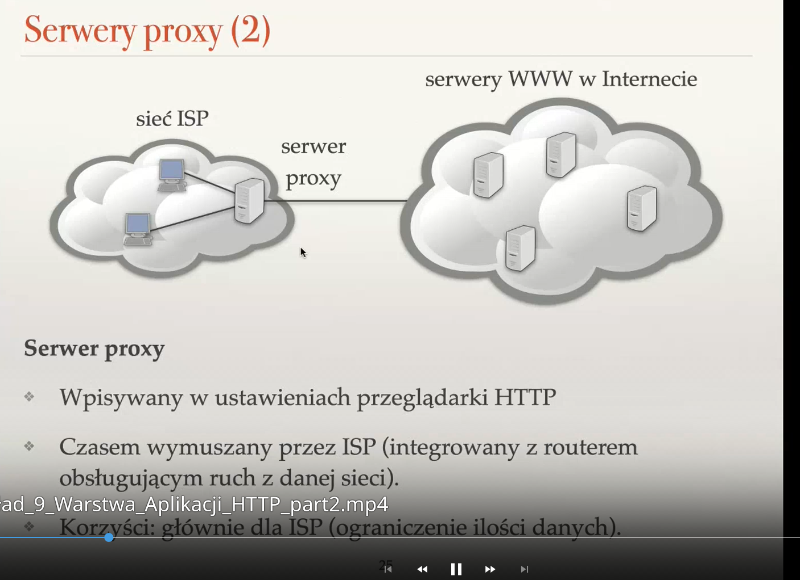
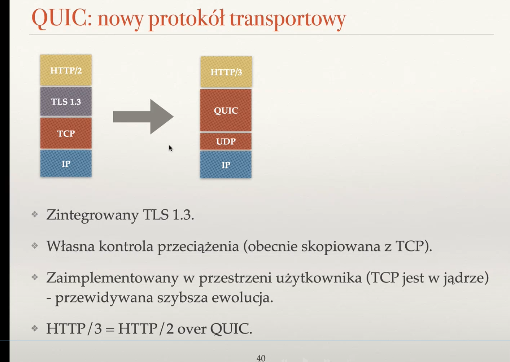
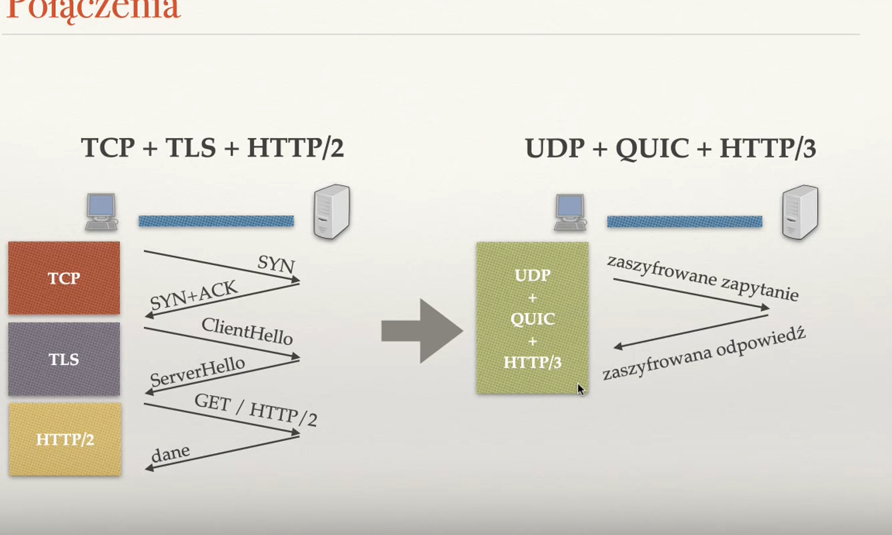

Created Saturday 25 June 2022
Zagadnienia
❖ Opisz budowę adresu URL. Opisz budowę adresu URL w przypadku schematu http.
URL — Uniform Resource Locator
Służy do identyfikacji zasobu. Składa się z dwóch części rozdzielonych dwukropkiem:
- schemat: (http, https, ftp, mailto, ...)
- część zależna od rodzaju zasobu
Przykład:
http://www.ii.uni.worc.pl/index.html
W przypadku http lub https po dwukropku podajemy
- //
- nazwa serwera WWW
- opcjonalnie :port
- /
- identyfikator zasobu wewnątrz serwera
- niekoniecznie jest to ścieżka do pliku
- / w identyfikatorze wskazuje na hierarchię
❖ W jakim celu serwer WWW ustawia typ MIME dla wysyłanej zawartości? Podaj kilka przykładów typów MIME.
By przeglądarka wiedziała jak dokładnie obsługiwać przesłane przez serwer dane, np. wyświetla pliki PDF, pobiera octet-stream, itd.
Przykłady:
- text/plain
- text/html
- image/jpeg
- video/mpeg
- application/msword — dokument .doc(x)
- application/pdf — dokument pdf
- application/octet-stream — ciąg bajtów bez interpretacji
❖ Wymień parę możliwych odpowiedzi HTTP wraz z ich znaczeniem.
1xx — informacyjne
2xx — sukces
3xx — przekierowania
4xx -- błąd po stronie klienta
5xx — błąd po stronie serwera
500 — Internal Server Error
404 — Not Found
200 — OK
❖ Po co w nagłówku żądania HTTP/1.1 podaje się pole Host?
Przeglądarka musi zamienić nazwę hosta, np. en.wikipedia.org na adres IP, by umieć się z nim połączyć. Pole Host podaje się ponownie, ponieważ na jeden adres IP może się mapować wiele adresów domenowych (tekstowych), dlatego specyfikujemy jaki konkretnie nas interesuje.
❖ Do czego służą pola Accept, Accept-Language, User-Agent, Server, Content-Length, Content-Type w
nagłówku HTTP?
Informują serwer o tym, co potrafi zrozumieć przeglądarka internetowa, np. jakiego języka strony oczekuje (np. polski, angielski), jakie typy MIME potrafi odebrać, jakiej przeglądarki uzywmy i w jakiej wersji.
❖ Jak wygląda warunkowe zapytanie GET protokołu HTTP?
W nagłówku podajemy If-Modified-Since. Podajemy w nim timestamp, kiedy ostatnio pobieraliśmy stronę. Jest to przydatne, gdy chcemy cache'ować strony, by nie pobierać ich niepotrzebnie za każdym razem, szczególnie jeśli dana strona nie zmienia swojego stanu zbyt często. Możemy dostać odpowiedzi 200 OK, wtedy pobieramy jeszcze raz, albo 304 Not Modified i wtedy pobieramy z cache'a.[[[[
❖ Jakie znasz kody odpowiedzi protokołu HTTP?
1xx — informacyjne
2xx — sukces
3xx — przekierowania
4xx -- błąd po stronie klienta
5xx — błąd po stronie serwera
500 — Internal Server Error
404 — Not Found
200 — OK
❖ Na czym polegają połączenia trwałe w HTTP/1.1? Do czego służy opcja Connection: close w nagłówku HTTP?
Wiele zapytań do serwera wrzucamy do jednego połączenia TCP, by przyspieszyć przesył danych. Opcja Connection: close w nagłówku pozwala na zamknięcie połączenia TCP.
❖ Do czego służą arkusze stylów CSS?
Do definiowania wyglądu strony. HTML określa wtedy jedynie strukturę strony.
❖ Wymień parę możliwości uzyskiwania dynamicznych stron WWW.
- Korzystanie z JavaScript, można go też wzbogacać bibliotekami (React, Angular, Vue, itd.)
- URL może wskazywać na program generujący kod HTML — wykorzystywane przez popularne frameworki do tworzenia aplikacji po stronie serwera: Django, Flask, Spring, Laravel. Dany program może komunikować się z serwerem za pośrednictwem IPC (komunikacja międzyprocesowa), np. CGI (Common Gateway Interface) lub API, np. interfejs WSGI.
- Formularzami, przekazywaniem parametrów (np. metody GET i POST)
- ciasteczka — do utrzymywania stanu sesji, bo HTTP jest bezstanowy.
❖ Po co stosuje się metodę POST?
Do wysyłania żądań, w którego treści (nie w nagłówku) znajduje się parametry. Można tak wysyłać do serwera np. pliki.
❖ Co to jest technologia REST?
REST (Representational State Transfer) jest to technologia lub raczej filozofia, która pozwala na zautomatyzowany dostęp do niektórych serwisów. Jest to pewna usługa sieciowa, która wykorzystuje metody protokołu HTML (GET, PUT, POST, DELETE), by ułatwić przesył danych — stworzyć do tego wygodne API, zamiast korzystać z gołego TCP.
❖ Do czego służą serwery proxy?
Służą do przechowywania w swojej pamięci stron, które niedawno były przeglądane przez użytkowników, by zmniejszyć liczbę zapytań do głównego serwera HTTP. Przynosi to korzyści głównie dostawcy internetu, ponieważ ogranicza przesył danych. Wykorzystywane przez dostawców internetu.

❖ Co to jest odwrotne proxy? Co to jest CDN?
Odwrotne proxy to proxy ale nie dla dostawców internetów, ale dla dostawców treści, np. dla Youtube, Facebook. Pobierane przez użytkowników treści gromadzą w swojej pamięci, by w razie kolejnego zapytania o te dane zwrócić je bezpośrednio do klienta, a nie pobierać je z serwera ponownie. Ruch jest rozłożony na wiele serwerów proxy, by odciążyć jeden główny serwer WWW. Wykorzystywany przez serwery WWW.
/pasted_image.png)
CDN (Content Delivery Network) to serwery proxy, ale obsługiwane przez inne organizacje, np. Akamai, Limelight. Inne firmy korzystają z ich usług. Służą do zapewnienia lokalnego proxy, który fizycznie znajduje się bliżej klienta, by przyspieszyć pobieranie treści, gdy główny serwer HTTP jest bardzo daleko.
❖ Jak skłonić klienta, żeby łączył się z serwerem proxy a nie bezpośrednio ze stroną WWW?
Można ustalić takie zachowanie w ustawieniach przeglądarki.
❖ Jakie informacje dołączane są przez serwer proxy do zapytania?
Dane identyfikujące klienta i serwer proxy:
X-Forwarded-For: adres IP
Via: adres IP proxy
Anonimizujące serwery proxy nie dodają takich nagłówków i zwykle są płatne.
❖ Co to są anonimowe serwery proxy?
To serwery proxy, które nie dodają do zapytań HTTP informacji identyfikujących klienta. Wtedy serwer WWW nie wie, że to my się z nim komunikujemy, tylko myśli że to proxy.
❖ W jakim celu powstał protokół QUIC? Jakie funkcje spełnia?
Jest to protokół, który ma przyspieszać przesył danych. Ma załatać problemy HTTP/2:
- powolne nawiązywanie połączenia — dużo czasu mija, nim klient zobaczy początek danych
- HTTP nie dostaje danych, gdy TCP zgubi choć jeden segment, nie ważne jak mało istotny. Musi czekać, aż TCP zrekonstruuje cały strumień.
QUIC
- własna kontrola przeciążenia
- implementacja na UDP (nie na IP, żeby zachować kompatybilność wsteczną — stare maszyny oczekują UDP/TCP).
- zintegrowany TLS 1.3
- zaimplementowany w przestrzeni użytkownika (TCP w jądrze) — przewidywana szybsza ewolucja


/pasted_image001.png){kind=link}
/pasted_image002.png){kind=link}
/pasted_image003.png){kind=link}